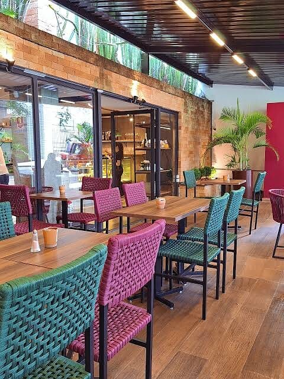
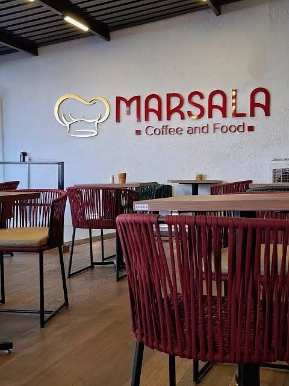
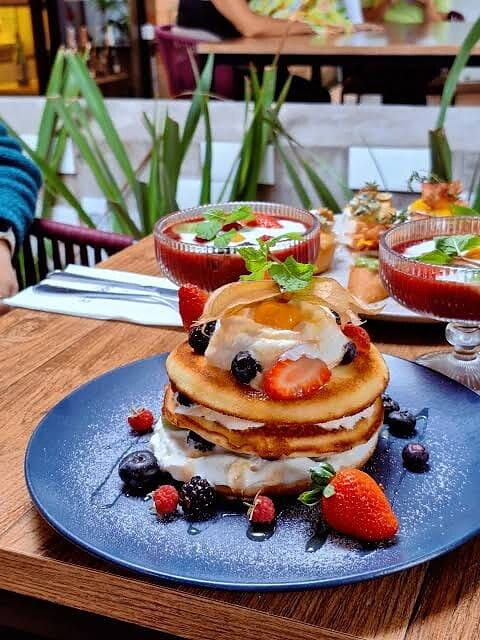
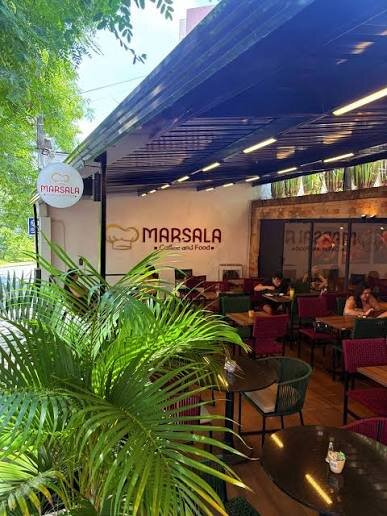

Café da manhã
Completo e saboroso, com pães, ovos, frutas e cafés de grãos selecionados.
Café & Restaurante · Campolim
Sinta-se em casa.
Aquele cheirinho bom que dá vontade de sentar antes mesmo de escolher. Café da manhã completo, brunch, almoço e doces feitos pelas mãos de um chef confeiteiro.


A casa
No Marsala, cada detalhe convida a desacelerar e aproveitar.
Os olhos passeiam pela vitrine de doces, os garçons chegam com os pratos à mesa, os bolos recheados chamam atenção, as quiches saem quentinhas e o cardápio vai se revelando em pequenas tentações ao longo do caminho.
É sobre comer bem, com calma. Sobre escolher com os olhos, sentir com o paladar e transformar um simples “vamos comer fora” em um momento especial.
Aqui, cada visita vira vontade de voltar.
Chef Alisson Ferreira
De uma bolsa térmica pelas ruas de São Miguel Arcanjo à cozinha do Marsala.
Em São Miguel Arcanjo, sua cidade natal, Alisson fazia tortas, bolos e doces, colocava tudo numa bolsa térmica e saía vendendo pelas ruas.
Começou uma faculdade de Turismo, mas não se encontrou. Decidiu prestar o vestibular para Gastronomia.
Foi se conhecendo e descobrindo coisas novas. Vendia os próprios doces na faculdade para ajudar a comprar os materiais do curso.
Depois de formado, passou por cozinhas profissionais até chegar ao Marsala, já como chefe de cozinha.
Recebeu o convite para o programa de confeitaria da GNT. Uma experiência maravilhosa, que fortaleceu sua carreira e trouxe muita visibilidade.
A unidade do Campolim abre as portas. Desde então, muita experiência, aprendizado e, até hoje, cada dia uma coisa nova.

Ser chefe de cozinha pra mim é mais do que apenas cozinhar. É ter a responsabilidade de liderar e compartilhar os conhecimentos com uma equipe, e saber que cada um dela faz parte do resultado final de um prato.
“Nossa maior alegria é ver a casa cheia: mesas cheias, famílias, amigos.”
Do primeiro café à sobremesa
Completo e saboroso, com pães, ovos, frutas e cafés de grãos selecionados.
Pães, croissants e sucos naturais para dividir sem pressa.
Pratos para todos os gostos, com serviço rápido da chegada à mesa.
Bolos recheados, tortas e a confeitaria assinada pelo chef.
Drinks caprichados para fechar o dia com estilo.
Feito aqui, com carinho
Arraste para ver mais delícias
Cardápio
Alguns favoritos da casa
Para levar
Além de provar aqui, você pode levar um pouco da experiência com você.
Crocantes, feitas na casa para o seu café da manhã.
O toque especial para acompanhar suas receitas.
É só aquecer e servir, com o sabor do Marsala.
Preparados com cuidado, prontos para a sua mesa.
Comida de verdade para o dia a dia corrido.
A confeitaria do chef, para levar e se deliciar.
Marsala Eventos
Um ambiente amplo, arejado, aconchegante e cheio de personalidade, com mesas bem distribuídas, conforto para os convidados e aquele clima que faz todo mundo se sentir em casa.

Por que você vai voltar
Pratos pensados para quem não abre mão do sabor.
Seu aumigo é bem-vindo na área externa.
Doces de quem já passou pelo Que Seja Doce, da GNT.
Rápido no primeiro atendimento e na entrega à mesa.
Quem visita, recomenda
“Comida maravilhosa, tem inúmeras combinações e pratos para todos os gostos!”
“O serviço é muito rápido, seja no primeiro atendimento, como na entrega na mesa.”
@marsala.sorocaba
Novidades do cardápio, bastidores da cozinha, aniversários, sorteios e os nossos clientes favoritos. Junte-se aos mais de 28 mil seguidores.
Seguir no InstagramVisite-nos